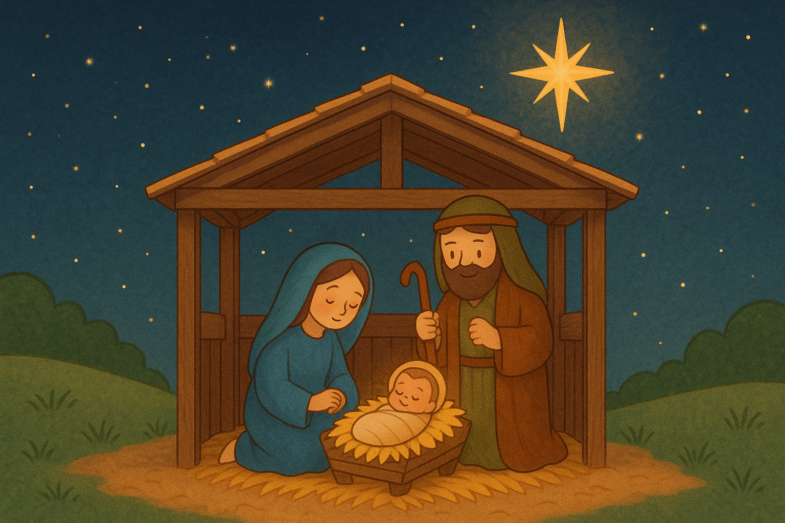

En el principio de los tiempos el Verbo reposaba en el seno de su Padre en lo más alto de los cielos: allí era la causa, a la par que el modelo de toda creación. En esas profundidades de una incalculable eternidad permanecía el Niño de Belén. Allí es donde debemos datar la genealogía del Eterno que no tiene antepasados, y contemplan la vida de complacencia infinita que allí llevaba.
La vida del Verbo Eterno en el seno de su Padre era una vida maravillosa y sin embargo, misterio sublime, busca otra morada en una mansión creada. No era porque en su mansión eterna faltase algo a su infinita felicidad sino porque su misericordia infinita anhelaba la redención y la salvación del género humano, que sin Él no podría verificarse.
El pecado de Adán había ofendido a un Dios y esa ofensa infinita no podría ser condonada sino por los méritos del mismo Dios. La raza de Adán había desobedecido y merecido un castigo eterno; era pues, necesario para salvarla y satisfacer su culpa que Dios, sin dejar el cielo, tomase la forma del hombre sobre la tierra y con la obediencia a los designios de su Padre, expiase aquella desobediencia, ingratitud y rebeldía.
Era necesario en las miras de su amor, que tomase la forma, las debilidades e ignorancia inconcientes de la infancia, para expiar las debilidades e ignorancia sistemáticas del hombre; que creciese para darle crecimiento espiritual; que sufriese, para enseñarle a morir a sus pasiones y a su orgullo y por eso el Verbo Eterno ardiendo en deseos de salvar al hombre resolvió hacerse hombre también y así redimir al culpable.
Era necesario en las miras de su amor que tomase la forma, las debilidades e ignorancia sistemática del hombre, que creciese para darle crecimiento espiritual; que sufriese, para morir a sus pasiones y a su orgullo y por eso el Verbo Eterno ardiendo en deseos de salvar al hombre resolvió hacerse hombre también y así redimir al culpable.
El Verbo Eterno se halla a punto de tomar su naturaleza creada en la santa casa de Nazaret, en donde moraban María y José. Cuando la sombra del secreto divino vino a deslizarse sobre ella, María estaba sola y engolfada en la oración. Pasaba las silenciosas horas de la noche en la unión más estrecha con Dios y mientras oraba el Verbo tomó posesión de su morada creada.
Sin embargo, no llegó inopinadamente; antes de presentarse, envió un mensajero que fue el Arcángel San Gabriel, para pedir a María de parte de Dios su consentimiento para la encarnación. El Creador no quiso efectuar este gran misterio sin la aquiescencia de su criatura.
Aquel momento fue muy solemne: era potestativo en María el rehusar; con qué adorables delicias, con qué inefable complacencia aguardaría la Santísima Trinidad a que María abriese los labios y pronunciase el fiat que debió de ser suave melodía para sus oídos, y con el cual se conformaba su profunda humildad a la omnipotente voluntad divina.
La Virgen inmaculada ha dado su asentimiento. El Arcángel ha desaparecido. Dios se ha revestido de una naturaleza creada; la voluntad eterna está cumplida y la creación completa. En las regiones del mundo angélico estallaba un júbilo inmenso, pero la Virgen María ni lo oía, ni hubiera prestado atención a él. Tenía inclinada la cabeza y su alma estaba sumida en un silencio que se asemejaba al de Dios.
El Verbo se había hecho carne y aunque todavía invisible para el mundo, habitaba ya entre los hombres a quienes su inmenso amor había venido a rescatar. No era ya sólo el Verbo Eterno, era el Niño Jesús, revestido de la apariencia humana y justificando ya el elogio que de él han hecho todas las generaciones al llamarle: el más hermoso de los hijos de los hombres.
Así había comenzado su vida encarnada el Niño Jesús. Consideremos el alma gloriosa y el santo cuerpo que había tomado, adorándolos profundamente.
Admirando en primer lugar el alma de ese divino Niño, consideremos en ella la plenitud de su gracia santificadora, la de su ciencia beatífica y por la cual, desde el primer momento de su vida vio la divina Esencia más claramente que todos los ángeles y leyó lo pasado y lo porvenir con todos sus arcanos conocimientos.
No supo nunca por adquisición voluntaria nada que no supiese por infusión desde el primer momento de su ser; pero él adoptó todas las enfermedades de nuestra naturaleza a que dignamente podía someterse aún cuando no fuesen necesarias para la grande obra que debía cumplir.
Pidámosle que sus divinas facultades suplan la debilidad de las nuestras y les dé nueva energía; que su memoria nos enseñe a recordar sus beneficios; su entendimiento a pensar en él, a no hacer sino su voluntad, lo que él quiere y en servicio suyo.
Desde el seno de su Madre comenzó el Niño Jesús a poner en práctica su eterna sumisión a Dios, que continuó sin la menor interrupción durante toda su vida. Adoraba a su Eterno Padre, le amaba, se sometía a su voluntad; aceptaba con resignación el estado en que se hallaba, conociendo toda su debilidad, toda su humillación, todas sus incomodidades.
¿Quién de nosotros quisiera retroceder a un estado semejante con el pleno goce de la razón y de la reflexión? ¿Quién pudiera sostener a sabiendas un martirio tan prolongado, tan penoso de todas maneras?
Por ahí entró el Divino Niño en su dolorosa y humillante carrera; así empezó a anonadarse delante de su Padre; a enseñarnos lo que Dios merece por parte de su criatura; a expiar nuestro orgullo, origen de todos nuestros pecados y hacernos sentir toda la criminalidad y el desorden de este orgullo.
Ya hemos visto la vida que llevaba el Niño Jesús en el seno de su purísima Madre; veamos hoy también la vida que llevaba también María, durante el mismo espacio de tiempo.
Necesidad hay de que nos detengamos en ella si queremos comprender, en cuanto es posible a nuestra limitada capacidad, los sublimes misterios de la Encarnación y el modo como hemos de corresponder a ellos.
María no cesaba de suspirar por el momento en que gozaría de esa visión beatífica terrestre: la faz de Dios encarnado. Estaba a punto de ver aquella faz humana que debía iluminar el cielo durante toda la eternidad. Iba a leer el amor filial en aquellos mismos ojos cuyos rayos debían esparcir para siempre la felicidad en millones de elegidos. Iba a ver aquel rostro todos los días, a todas horas, cada instante durante muchos años. Iba a verle en la ignorancia aparente de la infancia, en los encantos particulares de la juventud y en la serenidad reflexiva de la edad madura.
Jesús había sido concebido en Nazaret, domicilio de José y María, y allí era de creerse que había de nacer, según todas las probabilidades. Más Dios lo tenía dispuesto de otra manera y los profetas habían anunciado que el Mesías nacería en Belén de Judá, ciudad de David.
Para que se cumpliera esta predicción, Dios se sirvió de un medio que no parecía tener ninguna relación con este objeto, a saber: la orden dada por el emperador Augusto de que todos los súbditos del imperio romano se empadronasen en el lugar de donde eran originarios.
María y José, como descendientes que eran de David, no estaban dispensados de ir a Belén; y ni la situación de la Virgen Santísima , ni la necesidad en que estaba José del trabajo diario que le aseguraba la subsistencia, pudo eximirles de este largo y penoso viaje, en la estación más rigurosa e incómoda del año.
Representémonos el viaje de María y José hacia Belén, llevando consigo, aún no nacido, al creador del Universo, hecho hombre.
Contemplemos la humildad y la obediencia de ese Divino Niño, que aunque de raza judía y habiendo amado durante siglos a su pueblo con una predilección inexplicable obedece así a un príncipe extranjero que forma el censo de población de su provincia, como si hubiese para él en esa circunstancia algo que le halagase, y quisiese apresurarse a aprovechar la ocasión de hacerse empadronar oficial y auténticamente como súbdito en el momento en que venía al mundo.
¿No es extraño que la humillación, que causa tan invencible repugnancia a la criatura, parezca ser la única cosa creada que tenga atractivos para el Creador? ¿No nos enseñará la humildad de Jesús a amar esa hermosa virtud?
Llegan a Belén José y María, buscando hospedaje en los mesones; pero no lo encuentran, ya por hallarse todos ocupados, ya porque se les desechase a causa de su pobreza. Empero, nada puede turbar la paz interior de los que están fijos en Dios.
Si José experimentaba tristeza cuando era rechazado de casa en casa, porque pensaba en María y en el Niño, sonreíase también con santa tranquilidad cuando fijaba la mirada en su casta esposa. El Niño, aún no nacido, regocijábase de aquellas negativas, que eran el preludio de sus humillaciones venideras.
Cada voz áspera, el ruido de cada puerta que se cerraba ante ellos, era una dulce melodía para sus oídos. Eso era lo que había venido a buscar. El deseo de esas humillaciones era lo que había contribuido a hacerle tomar la forma humana.
¡Oh Divino Niño de Belén! Esos días que tantos han pasado en fiestas y diversiones o descansando muellemente en cómodas y ricas mansiones, han sido para vuestros padres un día de fatiga y vejaciones de toda clase. ¡Ay! el espíritu de Belén es el de un mundo que ha olvidado a Dios.
La noche ha cerrado del todo en las campiñas de Belén. Desechados por los hombres y viéndose sin abrigo, María y José han salido de la inhospitalaria población y se han refugiado en una gruta que se encontraba al pie de la colina.
Seguía a la Reina de los ángeles el jumento que les había servido de humilde cabalgadura durante el viaje y en aquella cueva hallaron un manso buey, dejado allí probablemente por alguno de los caminantes que habían ido a buscar hospedaje en la ciudad.
El Divino Niño, desconocido por sus criaturas racionales, va a tener que acudir a las irracionales para que calienten con su tibio aliento la atmósfera helada de esa noche de invierno y le manifiesten con esto su humilde actitud, el respeto y la adoración que le había negado Belén.
La rojiza linterna que José tenía en la mano iluminaba tenuemente ese pobrísimo recinto, ese pesebre lleno de paja, que es figura profética de las maravillas del altar y de la íntima y prodigiosa unión eucarística que Jesús ha de contraer con los hombres. María está en adoración en medio de la gruta, y así van pasando silenciosamente las horas de esa noche llena de misterio.
Que el Niño Jesús nazca en nuestros corazones.
